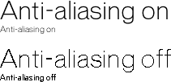

Using Director > Text > Editing and formatting text > About anti-aliased text
Using Director > Text > Editing and formatting text > About anti-aliased text |
About anti-aliased text
Anti-aliased text is text that uses color variations to make its jagged angles and curves look smoother. Director activates anti-aliasing by default. You can change this setting in the Text tab of the Property Inspector (see Setting text or field cast member properties.) Anti-aliasing functions the same way for embedded fonts and for system fonts that have not been embedded (see Embedding fonts in movies).
Using anti-aliased text dramatically improves the quality of large text on the Stage, but it can blur or distort smaller text. Experiment with the size settings to get the best results for the font you are using.

Director can anti-alias all outline (TrueType, PostScript, and embedded) fonts, but not bitmap fonts. When you select a font that cannot be anti-aliased, the message "This font cannot be anti-aliased" appears in the Font dialog box below the font list. (Display the Font dialog box by selecting text or a text sprite and then choosing Modify > Font.)